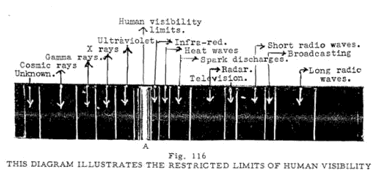

Part XI (Lessons 41–44): Building the Cube-Sphere Wave-Field of Curved Motion¶

LESSON NUMBER 41 PRELUDE
The goal of man is Cosmic Conscious Self-awareness–which is God-awareness.
LESSON NUMBER 42 ONE MORE STEP TOWARD BUILDING THE CUBE-SPHERE WAVE-FIELD
In the progress of these lessons the time has now come to clear up much confusion regarding what is so commonly called the “curvature of space”, and sometimes referred to as “this curved universe”.
LESSON NUMBER 43 WE CONTINUE THE CUBE-SPHERE OF THE FOUR DIMENSIONAL UNIVERSE OF TIME AND CURVED MOTION
The basic underlying principle of God’s CREATING universe of two-way motion is the equilibrium of absolute stillness. It is the stillness of the magnetic Light of God’s knowing. The entirety of God’s Still Light of knowing is a fulcrum from which the electric lever of God’s thinking extends from every point of that stillness to create an illusion of reality through motion.

LESSON NUMBER 44 ANSWERS TO STUDENTS QUESTIONS
We find it very surprising, as well as gratifying, to find that the questions which students are asking are becoming fewer as their knowledge increases, and are becoming more and more scientific and philosophical rather than metaphysical as they were in the beginning.